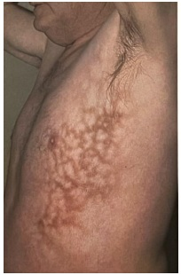

Apesar da indisponibilidade no Brasil, o CDC e o ACIP (Advisory Committee on immunization Practices) já emitiram orientações acerca da vacina JYNNEOS para varíola / monkeypox. Qual das a rmativas abaixo, segundo o CDC e ACIP, está correta:
Considerando o caso de um recém-nascido de 1800g que veio a óbito 15 minutos após o nascimento, o termo correto para definir o óbito é:
Uma criança de sete anos foi mordida na mão esquerda pelo cão do seu tio. O tio da criança diz que o cão não apresenta alterações comportamentais recentes e está com todas as vacinas em dia. A menina nunca recebeu pro laxia para raiva. Segundo o protocolo mais recente de pro laxia de raiva do Ministério da Saúde (2022), a conduta inicial, além de lavagem da lesão com água e sabão, consiste em:
Na prática clínica, visando excluir ou confirmar uma doença de forma decisiva, lançamos mão de testes múltiplos. Sobre os testes múltiplos é correto afirmar:
São consideradas doenças tropicais negligenciadas pela Organização Mundial da Saúde (OMS), exceto:
Considerando o número máximo de pessoas que podem ser vinculadas a uma Equipe de Saúde da Família, segundo a Política Nacional de Atenção Básica, uma região com 21 mil habitantes deverá ter, no mínimo, quantas equipes?
A priorização de cirurgia reparadora de mama em pacientes com câncer de mama em relação a pacientes com gigantomastia condiz com o princípio do SUS de:
A portaria GM/MS No 715, de 4 de abril de 2022, implantou no SUS a Rede de Atenção Materna e Infantil (Rami), uma atualização da proposta da Rede Cegonha. Nesta atualização, a Rami foi dividida em princípios, diretrizes e objetivos. São listadas como diretrizes da Rami, exceto:
A pro laxia pré-exposição (PrEP) ao vírus da imunode ciência adquirida (HIV) consiste no uso de antirretrovirais (ARV) orais para reduzir o risco de adquirir a infecção pelo HIV. Essa estratégia se mostrou e caz e segura em pessoas com risco aumentado de adquirir a infecção. Os fármacos utilizados na PrEP no SUS são:
O método SOAP é uma ferramenta de trabalho muito utilizada na atenção primária, que auxilia na análise, comparação e detecção de alterações clínicas, emocionais e comportamentais. Num caso hipotético de uma paciente hipertensa que adicionamos uma terceira droga ao seu esquema antihipertensivo, em qual categoria do SOAP esta informação deve ser registrada?
Valentina tem três anos e, desde o nascimento, vem batalhando contra a brose cística. Além das múltiplas infecções respiratórias, Valentina tem uma síndrome disabsortiva grave secundária à insu ciência pancreática exócrina. Ao se interessar pelo caso, você vai ler sobre insu ciência pancreática exócrina hereditária e descobre que, depois da brose cística, a principal causa é:
Paula tem quatro anos e, há três meses, iniciou quadros recorrentes de febre de 40oC, odinofagia, linfonodomegalia cervical dolorosa e dor abdominal. Os episódios costumam durar cinco dias e recorrem a cada duas semanas com resolução espontânea. Nos períodos de remissão, Paula ca totalmente assintomática. A mãe de Paula diz que os antibióticos não encurtam o período de duração da doença, mas que decidiu por conta própria, dar corticoide para a lha e que observou melhora quase imediata. O diagnóstico mais provável é:
Revisar: possível letra faltando em enunciado
Em relação à questão anterior, o estado nutricional de Antônio é classificado como:
Antônio, de 15 meses, apresenta episódios recorrentes de dor abdominal sem sinais de invasividade. Segundo a mãe, o quadro começou após a introdução completa da dieta complementar aos 8 meses. Ao exame físico, chama atenção distensão abdominal e palidez cutâneo mucosa. Não há sinais de irritação peritoneal ou organomegalia palpáveis. A avaliação nutricional mostra que Antônio está entre os escores Z -2 e -3 em estatura para a idade e IMC para a idade. Hemograma recente demonstra anemia com características que sugerem sideropenia. A hipótese mais provável para o quadro é:
Jorge tem seis anos e é trazido pelo pai à consulta com relato do aparecimento de equimoses há três dias. Jorge não faz uso de nenhum medicamento, nunca foi internado e o único dado relevante na sua história é um quadro viral respiratório há duas semanas. O pai nega sangramentos de mucosas. Ao exame físico, Jorge está em bom estado geral, apresenta algumas petéquias (< 100 no total) e duas pequenas equimoses em tronco (< 3cm de diâmetro). O hemograma colhido na emergência demonstra apenas uma plaquetopenia de 35,000/microL. Segundo escore de Buchanan e Adix para púrpura trombocitopênica imune (PTI), o risco desta PTI e a conduta são:
Nina tem 30h de vida e já está em alojamento conjunto com a mãe. Está aguardando um teste de triagem para ter alta hospitalar: o teste do coraçãozinho. A saturação no membro superior direito é de 99% e no membro inferior direito de 94%. Com base nos achados a conduta subsequente é:
Fernando tem dois meses e é trazido na consulta de pediatria pela mãe que faz as seguintes queixas: “Ele está muito magrinho. Toda vez que vou trocar a roupa ou a fralda dele, ele chora demais. O nariz dele sempre está com um catarro esbranquiçado”. Ao exame, Fernando apresenta adenomegalia generalizada, hepatoesplenomegalia, hipocorado 2+/4+ e chora à manipulação de extremidades. Considerando a hipótese de infecção congênita, o agente etiológico mais provável é:
Augusto tem cinco anos e foi trazido à emergência pela mãe com quadro de febre de 39oC e tosse produtiva há 48 horas. Ao exame físico, encontra-se prostrado e taquipneico. A ausculta pulmonar evidenciou estertores crepitantes em hemitórax direito com murmúrio vesicular abolido na base direita. Radiogra a de tórax evidenciou pneumonia e derrame pleural em base de hemitórax direito. O agente etiológico mais provável e o antibiótico de escolha são respectivamente:
Maria é mãe de Miguel, que tem quatro meses. Miguel está em regime de aleitamento exclusivo. Na visita do agente comunitário de saúde, Maria cou sabendo que está ocorrendo um surto de febre amarela na região onde mora. Quando Maria chega à unidade básica de saúde, sua conduta é:
André é um recém-nascido a termo, com peso ao nascer de 2,200g, e encontra-se em aleitamento materno exclusivo. Sua mãe é vegetariana estrita e não suplementou ferro durante a gestação, pois refere intolerância gástrica. Além de André, ela é mãe de João (1 ano), Pedro (3 anos) e Tiago (4 anos). Segundo as recomendações mais recentes da Sociedade Brasileira de Pediatria, como deverá ser feita a suplementação medicamentosa profilática de ferro de André?
Uma primigesta, cardiopata por doença reumática, classe funcional NYHA I, com boa evolução do trabalho de parto, apresenta parada na progressão. A apresentação é occipito direita transversa e com assinclitismo anterior, plano +2 de DeLee. Os batimentos cardíacos fetais estão em 128bpm. Considerando o quadro clínico apresentado, a melhor conduta no momento seria:
Segundo as Recomendações Assistenciais Para Prevenção, Diagnóstico e Tratamento da Hemorragia Obstétrica (Estratégia Zero Morte Materna por Hemorragia Pós-Parto), são considerados fatores de alto risco para hemorragia pós- parto:
A loquiação puerperal, cronologicamente, divide-se em diversos estágios evolutivos. A ordem correta da loquiação é:
Uma gestante de 25 anos de idade, com 11 semanas de gestação, traz à consulta do pré-natal uma sorologia positiva para Toxoplasmose (IgM e IgG positivas). O próximo passo investigativo seria:
O agente responsável pela maioria dos casos de mastite puerperal é:
Critérios diagnósticos de osteoporose critério densitométrico eou critério clínico Sobre a densitometria óssea, é correto afirmar:
São medicações utilizadas no tratamento da bexiga hiperativa, exceto:
Uma paciente com diagnóstico de epilepsia em uso de fenitoína 100mg de 08/08 horas, com bom controle das crises, deseja saber sobre métodos contraceptivos. Considerando as comorbidades da paciente e a medicação em uso, a melhor opção contraceptiva é:
Uma mulher de 64 anos queixa-se de “bola e peso na vagina” há 1 ano. Ao exame ginecológico, foi evidenciando prolapso genital com os seguintes valores de acordo com a quantificação de prolapso de órgão pélvico (POP-Q): Aa +3; Ba +8, C +8, HG 4,5, CP 3,5, CVT 8, Ap +3, Bp +8, D -- O estádio do prolapso e o tratamento mais adequado são:
Uma paciente de 27 anos apresenta um laudo de colpocitologia oncótica com células escamosas atípicas de significado indeterminado, possivelmente não neoplásicas (ASC-US). Segundo as Diretrizes Brasileiras para o Rastreamento do Câncer do Colo do Útero, a conduta subsequente é:
São preditores de via aérea difícil:
Para um paciente com adenocarcinoma gástrico de 3cm localizado em antro gástrico, com comprometimento linfonodal de tronco celíaco e sem metástases hepática, a melhor técnica cirúrgica e a reconstrução deverão ser:
São critérios para excisão local no câncer retal, exceto:
A lesão do manguito rotador é umas das principais causas de dor no ombro. Os músculos que formam este grupo são:
Na herniorrafia inguinal aberta, os nervos mais comumente lesados são:
Na investigação etiológica inicial de uma paciente com pancreatite aguda, foram realizadas ultrassonogra as seriadas e lipidograma completo. Não foram evidenciadas colelitíase ou dilatação de vias biliares. Os níveis de colesterol e triglicerídeos estavam dentro da normalidade. A paciente é abstêmia e nega uso recente de medicamentos ou história familiar ou pessoal de pancreatite recorrente. Considerando a etiologia mais provável, o próximo exame a ser solicitado é:
Um paciente de 60 anos, portador de artrite gotosa crônica, foi encontrado pelos familiares sentado no vaso sanitário de casa, letárgico, com grande quantidade de sangue vivo em orofaringe e no chão em torno do vaso. Admitido no PS, foi realizada endoscopia digestiva alta após expansão volêmica e estabilização hemodinâmica. Foi visto na endoscopia úlcera em corpo gástrico com sangramento em porejamento. O laudo endoscópico, segundo a classificação de Forrest, deverá ser:
Um paciente com quadro de obstrução de intestino delgado e vômitos incoercíveis, apresentaria o seguinte distúrbio hidroeletrolítico:
Segundo a nova diretriz pré-operatória da Sociedade Europeia de Cardiologia (ESC) 2022, devem ser suspensos no dia da cirurgia não cardíaca:
O Projeto ACERTO (Aceleração da Recuperação Total Pós-Operatória) iniciou o programa multimodal pioneiro no território nacional, o qual, desde a concepção, destacou a importância de questões nutricionais na recuperação do paciente cirúrgico. São recomendações do projeto ACERTO:
Diante da epidemia atual de varíola símia (Monkeypox), o CDC (Centers for Disease Control and Prevention) liberou para uso em caráter excepcional nos pacientes com a forma grave da doença o uso de terapia antiviral. O antiviral em questão é o:
Uma paciente de 41 anos de idade, sem comorbidades, dá entrada na emergência com quadro de tosse, dor pleurítica e febre aferida de 39oC. A aferição dos sinais vitais mostra uma pressão arterial de 130x85mmHg, frequência cardíaca de 105bpm e frequência respiratória de 35irpm. A paciente está vigil e orientada. Traz consigo uma receita médica com prescrição de Amoxicilina + ácido clauvulânico de cinco dias atrás, que refere estar tomando, além de uma radiogra a de tórax que evidencia uma hipotransparência em base pulmonar direita. Antígeno para SARS COV-2 feito na triagem: Negativo. Exames laboratoriais: Na+ 130mEq/L, K+ 4,0mEq/L, Creatinina 1,0mg/dL, Ureia 30mg/dL. Considerando os dados apresentados, a conduta subsequente é:
Um paciente de 60 anos, etilista pesado e portador de hepatite pelo vírus C, é trazido pelos familiares com a queixa de estar “trocando o dia pela noite”. Ao exame, o paciente encontra-se letárgico, desorientado no tempo e no espaço. Há presença de asterixis, icterícia 3+/4+ e ascite moderada. Exames laboratoriais colhidos na emergência mostram bilirrubina total de 6mg/dL, albumina de 2,5g/dL, INR de 3,0. Segundo a classificação de Child Pugh, este paciente é:
O reconhecimento de algumas lesões dermatológicas típicas deve ser feito pelo médico não especialista. Por vezes, o diagnóstico já pode ser aventado na anamnese. Pacientes que apoiam o laptop nas coxas ou que fazem uso frequente de bolsas de água quente ou cobertores térmicos podem desenvolver a dermatose abaixo, que é chamada de:

A análise liquórica nas suspeitas de meningite bacteriana é de suma importância e deve ser realizada prontamente. Considerando as meningites bacterianas não tuberculosas, o achado de quantidade substancial de linfócitos na citometria nos deve fazer pensar em infecção por:
Os efeitos deletérios da obesidade são bem conhecidos e documentados: maior associação com hipertensão, diabetes, AVE, doença coronariana, apneia do sono e consequentemente, mortalidade. Uma outra complicação pouco descrita, mas não menos importante, é a hipertensão intracraniana idiopática ou obesas. Além da obesidade, o excesso de qual vitamina pode estar relacionado a esta patologia neurológica?
Um dos grandes diagnósticos diferenciais a ser feito em pacientes com ascite consiste entre a peritonite bacteriana espontânea (PBE) e a peritonite bacteriana secundária (PBS). Nos casos de PBS causados por perfuração visceral ou pós- paracentese, o tratamento cirúrgico deve ser instituído prontamente, dada a alta letalidade desta complicação. Na análise do líquido ascítico, a presença de pelo menos dois de cinco critérios quando presentes, sugerem PBS. Dos listados abaixo, qual não constitui um critério para PBS?
A “crise dos opioides”, muito citada na literatura estadunidense, decorre do uso abusivo e indevido desta classe de drogas. Com casos de intoxicação cada vez mais frequentes, cabe ao pro ssional de saúde estar apto a reconhecer as manifestações inerentes ao quadro. O melhor preditor da toxicidade por opioides é:
O escore de PADUA é uma das ferramentas mais utilizadas para determinar o risco de tromboembolismo venoso em pacientes internados. Aqueles que pontuam com quatro ou mais pontos são considerados de alto risco e devem receber anticoagulação profilática, salvo contraindicações. Dos itens listados abaixo, aquele que não está incluso neste escore é:
O aumento expressivo da incidência de neoplasias na população mais jovem tem sido assunto frequente nas revistas médicas. Os tumores testiculares já são uma neoplasia com alta incidência nas faixas etárias mais jovens. Considerando o tumor seminomatoso, não haverá elevação de: Respostas: 1 12 23 34 45